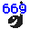
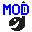

|
Icon |
Module Description |
|
 |
An early module format with few effects and only 8 channels.
Only a few effects are supported. The modules come from the "Composer
669" and "Unis 669". The "669" and "Extended
669" format was one of the first on the PC. "Composer
669" was written by Tomasz Pytel. The "Unis 669 Composer" was written by Jason Nunn. Mime Type:
audio/x-669 File Extension(s):
.669 Played (MikMod): Converted (MikModConverter):
669 |
|
|
This is a module format where the module uses C64 like synth
sounds. It come from the Amiga, where it was known as the THX
format, but the programmers changed the name to AHX. Reason for this change was legal problems with the THX name and George Lucas sound system. The editor was created by Pink and Dexter of Abyss. The player we use is
created by Bartman of Abyss. Mime Type:
audio/x-ahx File Extension(s):
.ahx .thx Played (AHX):
AHX 1.x
AHX 2.x |
|
|
This is the primary sample file format used on the Macintosh.
It's built on the Electronic Arts IFF file format standard. The
samples can contain samples from 1 to 32 bits sample range and
as many channels you want.
Mime Type:
audio/x-aiff File Extension(s):
.aiff .aif Played (Sample / AudioIFF):
AudioIFF |
|
|
The AMF stands for "Advanced Module Format" and is the
internal module format of the "DOS Sound and Music Interface"
(DSMI) library. This format has the same limitation as the S3M
format. The DSMI library was written by Otto Chrons.
Mime Type:
audio/x-amf File Extension(s):
.amf Played (MikMod): Converted (MikModConverter):
DSMI |
|
|
This is the SoundMonitor format. The BP letters stand for Brian
Postma, who is the creator of this format. The module format
have both synthesis and samples. Brian have later on created
a player on both Windows and Linux.
Mime Type:
audio/x-bp File Extension(s):
.bp Played (SoundMonitor):
SoundMonitor 1.1
SoundMonitor 2.2
SoundMonitor 2.2 (BPSM) |
|
|
This is the internal format of the "Digital Sound Interface
Kit" (DSIK) library, the ancester of the SEAL library. This
format has the same limitation as the S3M format. The DSIK library
was written by Carlos Hasan and released in 1994.
Mime Type:
audio/x-dsm File Extension(s):
.dsm Played (MikMod): Converted (MikModConverter):
DSIK |
|
|
Also called "Farandole". It's an enhanced version of
the 669 format with more effects and channels. The "Farandole"
composer was written by Daniel Potter.
Mime Type:
audio/x-far File Extension(s):
.far Played (MikMod): Converted (MikModConverter):
Farandole |
|
|
This is an old format from the Amiga, called "Future Composer".
It was developed by Jochen Hippel and he used it to compose some
of his game music, such as "Rings of Medusa" and "Shaolin".
A lot of cracker intros used this format in the early days, so
you can find a lot of modules in this format on the internet.
Mime Type:
audio/x-fc File Extension(s):
.fc Played (FutureComposer):
Future Composer 1.4 Converted (ModuleConverter):
Future Composer 1.3 |
|
|
Previously this music format has been known as "Fredmon" or "Fred
Monitor" which is wrong. The right name is "Fred Editor". There
are 2 types of modules, which are editor and final. APlayer can
play both types. The editor files can be loaded into the Fred
Editor program. The final modules have a 68000 assembler player
in the beginning of the file and can't be loaded into the editor. There are some good C64 covers available made by Jogeir Liljedahl.
Mime Type:
audio/x-fred File Extension(s):
.frd .fred Played (Fred):
Fred Editor
Fred Editor (Final) |
|
|
This is the "General DigiMusic" format. It's the internal
format of the "Bells, Whistles and Sound Boards" library.
The format has the same limitations as the S3M format. The BWSB
library was written by Edward Schlunder.
Mime Type:
audio/x-gdm File Extension(s):
.gdm Played (MikMod): Converted (MikModConverter):
General DigiMusic |
|
|
IFF Sound File and IFF 16-bit Sound File are formats from Amiga. IFF 16-bit Sound File can be encoded in either PCM or Fibonnaci.
Mime Type:
audio/x-iff File Extension(s):
.iff Played (Sample): Converted:
IFF-16SV
IFF-8SVX |
|
|
This is the "Imago Orpheus" format. This format is
roughly equivalent to the XM format, but with two effects columns
instead of a volume column and an effect column. The tracker
was written by Lutz Roeder.
Mime Type:
audio/x-imf File Extension(s):
.imf Played (MikMod): Converted (MikModConverter):
Imago Orpheus |
|
|
This is the most advanced module format I have ever seen. You
can do anything you want. You can use up to 64 channels, tons
of effects, surround sound etc. It have all what FastTracker
II have and even more, e.g. the New Note Action system.
It's Jeffrey Lim who's responsible for the tracker, called "Impulse
Tracker".
Mime Type:
audio/x-it File Extension(s):
.it Played (MikMod): Converted (MikModConverter):
Impulse Tracker |
|
|
JamCracker - It came from the Amiga, but it's not the most used
format. There are some nice tunes available made by Dr. Awesome alias Bjørn Lynne.
Mime Type:
audio/x-jam File Extension(s):
.jam Played (JamCracker):
JamCracker |
|
|
Octamed - It came from the Amiga. Player was developed by Teijo Kinnunen. Later on he created player for PC also. APlayer Octamed player is based on PC version. Mime Type:
audio/x-med File Extension(s):
.med Played (Octamed):
MED
OctaMED
OctaMED Professional 4.00
OctaMED Professional 6.00
OctaMED Sound Studio |
|
|
This is the internal format used by MikMod and the APlayer MikMod
player, called "UNIMOD". Use of this format is discouraged.
This format is only supported for completeness.
Mime Type:
audio/x-mikmod File Extension(s):
.mik Played (MikMod): Converted (MikModConverter):
UniMod |
|
 |
Mod file format is the main file format used on the Amiga. A lot of demos, even games used this format
and has been improved over the years with more effects and samples. A lot of demo groups have created they own format based on the mod
format, which packed the file to a minimum. These file can be converted back to the original mod format and played by APlayer.
Mod file format supports a wide range of ProTracker like formats including: ProTracker,
FastTracker, TakeTracker, SoundTracker15, SoundTracker31, NoiseTracker
& StarTrekker with AM support.
Mime Type:
audio/x-mod File Extension(s):
.mod Played (ModTracker):
FastTracker
NoiseTracker
ProTracker
SoundTracker15
SoundTracker31
StarTrekker
StarTrekker 8-Voices
TakeTracker Converted (ProWizard):
AC1D Packer
Channel Player v1
Channel Player v2
Channel Player v3
Digital Illusions
Eureka Packer
FC-M Packer
Fuchs Tracker
Fuzzac Packer
Game Music Creator
Heatseeker mc1.0
Hornet Packer
IceTracker v1.0
Kefrens Sound Machine
KRIS Tracker
Laxity Packer
Module Protector
Noise Packer v1
Noise Packer v2
Noise Packer v3
NoiseRunner
NoiseTracker Pak
PhaPacker
Power Music
ProMizer v0.1
ProMizer v1.0c
ProMizer v1.8a
ProMizer v2.0
ProMizer v4.0
ProPacker v1.0
ProPacker v2.1
ProPacker v3.0
ProRunner v1
ProRunner v2
Pygmy Packer
SKYT Packer
SoundTracker v2.6
STIM (SlamTilt)
The Dark Demon
The Player v4.0A
The Player v4.0B
The Player v4.1A
The Player v5.0A
The Player v6.0A
The Player v6.1A
Tracker Packer v1
Tracker Packer v2
Tracker Packer v3
Unic Tracker
Wanton Packer
XANN Packer
Zen Packer |
|
|
This is one of the most known file formats ever. You can download
a lot of files in this format on the internet, but most of them
are pirated songs. APlayer can play layer 1, layer 2 and layer
3 files. The last one is also known as MP3 files.
Mime Type:
audio/x-mpeg File Extension(s):
.mp1 .mp2 .mp3 Played (Mpg123):
MPEG 1.0 Layer 1
MPEG 1.0 Layer 2
MPEG 1.0 Layer 3
MPEG 2.0 Layer 1
MPEG 2.0 Layer 2
MPEG 2.0 Layer 3
MPEG 2.5 Layer 1
MPEG 2.5 Layer 2
MPEG 2.5 Layer 3 |
|
|
A tracker format sporting 1 to 32 channels, called "Multi
Tracker". The file format differs alot from ProTracker,
but there are still alot of similarities, therefore it is placed
in the same player.
Mime Type:
audio/x-mtm File Extension(s):
.mtm Played (ModTracker):
Multi Tracker |
|
|
This format is one of the first to support multiple channels,
which means more than 4 channels, on the Amiga. It support upto
8 channels, but each channel doesn't have independent volume
control. When you change the volume on a channel that is mixed
together with another one, you change the volume on both channels.
APlayer has one of the most accurate players to play Oktalyzer modules. It play them just like
the editor does. The standalone player and sources that follows the Oktalyzer editor, doesn't play the modules right.
Mime Type:
audio/x-okt File Extension(s):
.okt Played (Oktalyzer):
Oktalyzer |
|
|
This is also a well-known format, namely ScreamTracker 3.xx.
It was created by Sami Tammilehto (PSI) of FutureCrew. You can
get a lot of modules in this format and some great ones from
Skaven and Purple Motion of FutureCrew. This format supports
32 channels, all the ProTracker effects and a handful of new
features as well. You can also use Adlib sounds, but this is
not supported in APlayer.
Mime Type:
audio/x-s3m File Extension(s):
.s3m Played (MikMod): Converted (MikModConverter):
ScreamTracker 3 |
|
|
The SoundFX file format is like SoundTracker. It only have a
few effects and some special pattern commands, which SoundTracker
doesn't have. The program was created by Linel Software.
Mime Type:
audio/x-sfx File Extension(s):
.sfx Played (SoundFX):
SoundFX 2.0 Converted (ModuleConverter):
SoundFX 1.3 |
|
|
SID modules contains tunes and sound effects from the good old
Commodore 64. The player is based on the SidPlay
program by Michael Schwendt. The behaviour of the SID player
can be changed with the SID settings
from the Window/Player-menu in the main APlayer window. If you
want some more technical information about the format check it
out here.
Mime Type:
audio/x-psid File Extension(s):
.sid .dat .inf .c64 .prg .info .data .mus Played (SidPlay):
SID |
|
|
The Sawteeth program was created for BeOS by Jonas and Arvid
Norberg as a synthmodule creator. The add-on that made it possible
for APlayer to play the modules was made by Arvid.
Mime Type:
audio/x-st File Extension(s):
.st Played (Sawteeth):
Sawteeth |
|
|
Stands for ScreamTracker 2.xx. It was the first tracker and module
format developed for the IBM PC. It is based on the SoundTracker
module specifications, and does not sport many of the features
offered by ProTracker. It was created by Sami Tammilehto (PSI)
of FutureCrew.
Mime Type:
audio/x-stm File Extension(s):
.stm Played (MikMod): Converted (MikModConverter):
ScreamTracker 2 |
|
|
This is "STMIK 0.2" modules. "STMIK" (the
ScreamTracker Music Interface Kit) was a module playing library
distributed by Future Crew to play Scream Tracker modules in
games and demos. It uses an intermediate format between STM and
S3M and comes with a tool converting STM modules to STX. "STMIK"
was written by PSI of Future Crew a.k.a. Sami Tammilehto.
Mime Type:
audio/x-stx File Extension(s):
.stx Played (MikMod): Converted (MikModConverter):
STX |
|
|
Do you remember the music from Turican II or Rock'n'Roll on the
Amiga? Well, it was Chris Hülsbeck who composed these wonderful
pieces of music and you can now play them with APlayer. You can
download tons of music by Chris on the internet in this format.
There is 3 formats this player can play, and that's the old 1.5
format, the Professional and the 7-Voices formats.
The player is based on Jonathan H. Pickard player routine on Linux.
7-voices player is created by both Chris and Jochen Hippel, because Jochen had written a great
mixer routine on the Amiga. Later on, a tool was created on the Amiga to
merge the two files TFMX have (the .mdat and .smpl files) together in one
file. APlayer can also play these standalone files.
Mime Type:
audio/x-tfmx File Extension(s):
.mdat .tfx Played (TFMX):
TFMX 1.5
TFMX Professional
TFMX 7-Voices |
|
|
This tracker, also called "Ultra Tracker", was created
by Marc Andre Schallehn (MAS) of Prophecy. It's a lot like ProTracker
with one major difference: the ability to have two effects per
channel at the same time.
Mime Type:
audio/x-ult File Extension(s):
.ult Played (MikMod): Converted (MikModConverter):
Ultra Tracker |
|
|
These are modules that follow with the PC games Unreal and Unreal Tournament. APlayer
can play these modules directly, so you can enjoy the atmosphere
from the game.
Mime Type:
audio/x-umx File Extension(s):
.umx Played (MikMod): Converted (ModuleConverter):
Unreal
Unreal Tournament |
|
|
This format is called Ogg Vorbis. It is open project / open source project created by Xiphophorus. The format is in same family as MP3 and WMA files, which means it is a packed sample format.
Mime Type:
audio/x-vorbis File Extension(s):
.ogg Played (OggVorbis):
Ogg Vorbis |
|
|
This format is also known as Microsoft wav files (.wav). These
files can be in different formats, indicated by an ID number
in the .wav file, and only some of these are supported. See the
player description for a list over the supported formats.
Mime Type:
audio/x-wav File Extension(s):
.wav Played (Sample / RIFF-WAVE):
RIFF-WAVE |
|
 |
Also called "FastTracker II". It's the most popular
tracker on the PC at the moment. It was created by Fredrik Huss
and Magnus Högdahl of Triton. It supports up to 32 channels,
volume envelopes and instruments.
Mime Type:
audio/x-xm File Extension(s):
.xm Played (MikMod): Converted (MikModConverter):
FastTracker II |